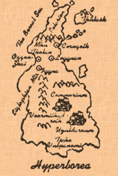

|

Leng in Ye Cold Waste is one of those cities, hidden halfway between this world and ye realms of Dreams in ye northernmost lands of Earth. Hidden as well in ye furnace of a burning desert lies Irem Of Thousand Pillars, dressed like a jewel behind a wall of sand.  Others are places where one of Them has been banished and is waiting, dreaming of ye Times when they shall rule again. Cthulhu is locked away in a sunken stone city called R'lyeh beneath ye Eastern Ocean, close to ye lost continent of Mu. His son Ghatanothoa lays within ye mountain of Mu. His second son, Ythogtha, was imprisoned in a chasm in Yhe, a Muvian province. Zoth-Ommog lay chained beneath ye ocean off ye "Island of ye Sacred Stone Cities." Ubbo-Sathla, ye source and ye end lay confined forever at ye subterranean place referred to only as "gray-litten Y'qaa, beneath ancient Hyperborea. These are not empty places however. Servents and minions still lurk in
ye dark corners of titanic streets. In addition to ye dangers of such
journey, ye Traveller shall be prepared to face ye Ones who still worship
Them in ye Dark. With much wisdom and mastery of the Art of Arcanes, ye
Traveller may find there artefacts and allies to start an even more
dangerous journey ; the very path of ye Outer
Places, where ye Old Ones came from and where some are still
dreaming... |
 ook of Places
ook of Places  e Old Ones
came, and they built their own places. Most of them were Cyclopean cities,
raised by Ye Old Ones or destroyed by Them. Made of black obsidian and
ever strong basalt, they were built to ye image of their Makers : huge
alleys where They can Walk on Winds, countless pillars and towers rising
to ye skies like filthy claws, shiny domes and crystal windows, from where
they could watch ye Stars They Came From.
e Old Ones
came, and they built their own places. Most of them were Cyclopean cities,
raised by Ye Old Ones or destroyed by Them. Made of black obsidian and
ever strong basalt, they were built to ye image of their Makers : huge
alleys where They can Walk on Winds, countless pillars and towers rising
to ye skies like filthy claws, shiny domes and crystal windows, from where
they could watch ye Stars They Came From.
{kind=link}
 Book of Places Book of Places
|
Book
of Outer Places  |